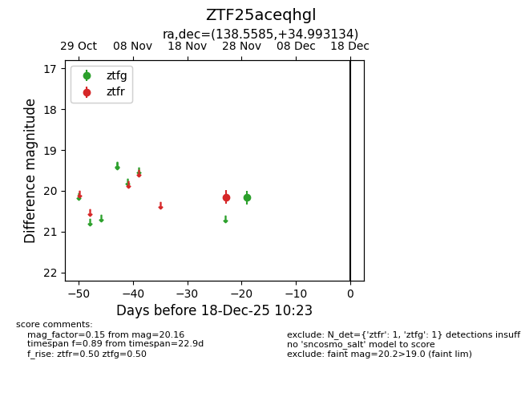
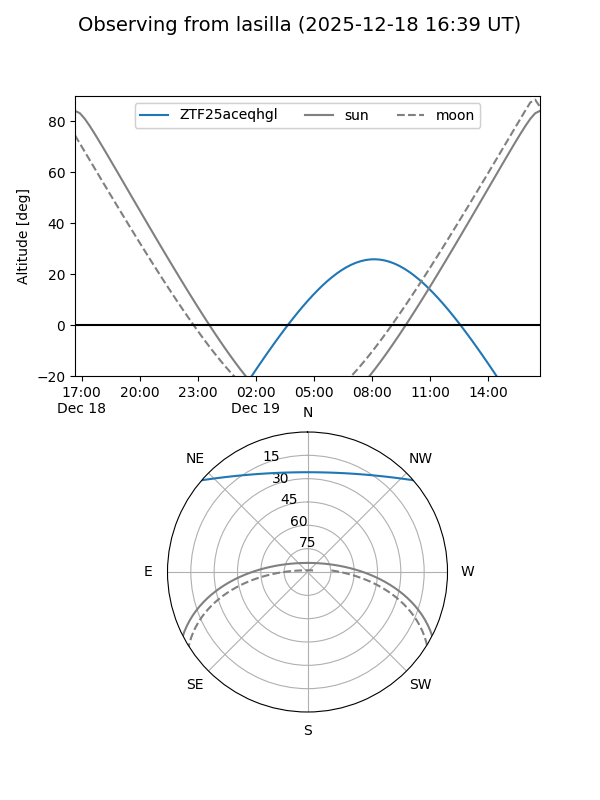
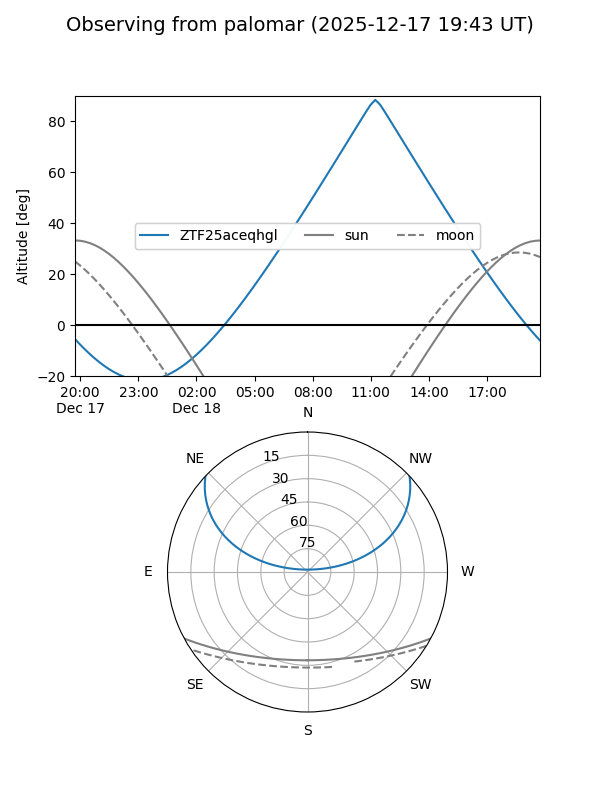

ZTF25aceqhgl
Target ZTF25aceqhgl at 2025-12-18 11:17
Aliases and brokers:
FINK: fink-portal.org/ZTF25aceqhgl
Lasair: lasair-ztf.lsst.ac.uk/objects/ZTF25aceqhgl
ALeRCE: alerce.online/object/ZTF25aceqhgl
alt names
ZTF25aceqhgl (ztf,fink_ztf)
Coordinates:
equatorial (ra, dec) = 138.5585,+34.99313
equatorial (HMS+DMS) = 09:14:14.04,+34:59:35.28
galactic (l, b) = (189.2051,+43.38875)
Photometry
last ztfg=20.16, ztfr=20.16
1 ztfg, 1 ztfr detections
Lightcurve

Visibility


Additional plots